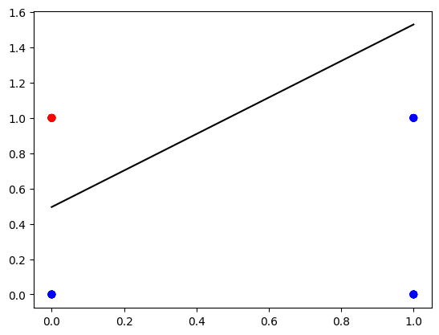
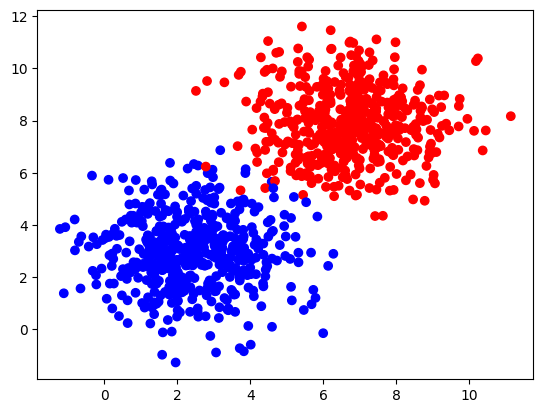
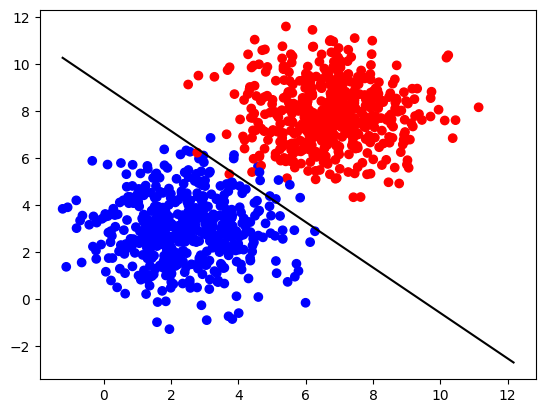

import numpy as np
import matplotlib.pyplot as plt
from matplotlib import colors
# A function to create a dataset.
from sklearn.datasets import make_blobs
# Output of plotting commands is displayed inline within the Jupyter notebook.
%matplotlib inline
# Set a seed so that the results are consistent.
np.random.seed(3)Table of contents
- Classification with Perceptron
- Packages
- 1 - Single Perceptron Neural Network with Activation Function
- - Neural Network Structure
- - Dataset
- - Define Activation Function
- 2 - Implementation of the Neural Network Model
- 3 - Performance on a Larger Dataset
Packages
## 1 - Single Perceptron Neural Network with Activation Function
You already have constructed and trained a neural network model with one perceptron. Here a similar model can be used, but with an activation function. Then a single perceptron basically works as a threshold function.
### - Neural Network Structure
The neural network components are shown in the following scheme:

Similarly to the previous lab, the input layer contains two nodes \(x_1\) and \(x_2\). Weight vector \(W = \begin{bmatrix} w_1 & w_2\end{bmatrix}\) and bias (\(b\)) are the parameters to be updated during the model training. First step in the forward propagation is the same as in the previous lab. For every training example \(x^{(i)} = \begin{bmatrix} x_1^{(i)} & x_2^{(i)}\end{bmatrix}\):
\[z^{(i)} = w_1x_1^{(i)} + w_2x_2^{(i)} + b = Wx^{(i)} + b.\tag{1}\]
But now you cannot take a real number \(z^{(i)}\) into the output as you need to perform classification. It could be done with a discrete approach: compare the result with zero, and classify as \(0\) (blue) if it is below zero and \(1\) (red) if it is above zero. Then define cost function as a percentage of incorrectly identified classes and perform backward propagation.
This extra step in the forward propagation is actually an application of an activation function. It would be possible to implement the discrete approach described above (with unit step function) for this problem, but it turns out that there is a continuous approach that works better and is commonly used in more complicated neural networks. So you will implement it here: single perceptron with sigmoid activation function.
Sigmoid activation function is defined as
\[a = \sigma\left(z\right) = \frac{1}{1+e^{-z}}.\tag{2}\]
Then a threshold value of \(0.5\) can be used for predictions: \(1\) (red) if \(a > 0.5\) and \(0\) (blue) otherwise. Putting it all together, mathematically the single perceptron neural network with sigmoid activation function can be expressed as:
\[\begin{align} z^{(i)} &= W x^{(i)} + b,\\ a^{(i)} &= \sigma\left(z^{(i)}\right).\\\tag{3} \end{align}\]
If you have \(m\) training examples organised in the columns of (\(2 \times m\)) matrix \(X\), you can apply the activation function element-wise. So the model can be written as:
\[\begin{align} Z &= W X + b,\\ A &= \sigma\left(Z\right),\\\tag{4} \end{align}\]
where \(b\) is broadcasted to the vector of a size (\(1 \times m\)).
When dealing with classification problems, the most commonly used cost function is the log loss, which is described by the following equation:
\[\mathcal{L}\left(W, b\right) = \frac{1}{m}\sum_{i=1}^{m} L\left(W, b\right) = \frac{1}{m}\sum_{i=1}^{m} \large\left(\small -y^{(i)}\log\left(a^{(i)}\right) - (1-y^{(i)})\log\left(1- a^{(i)}\right) \large \right) \small,\tag{5}\]
where \(y^{(i)} \in \{0,1\}\) are the original labels and \(a^{(i)}\) are the continuous output values of the forward propagation step (elements of array \(A\)).
You want to minimize the cost function during the training. To implement gradient descent, calculate partial derivatives using chain rule:
\[\begin{align} \frac{\partial \mathcal{L} }{ \partial w_1 } &= \frac{1}{m}\sum_{i=1}^{m} \frac{\partial L }{ \partial a^{(i)}} \frac{\partial a^{(i)} }{ \partial z^{(i)}}\frac{\partial z^{(i)} }{ \partial w_1},\\ \frac{\partial \mathcal{L} }{ \partial w_2 } &= \frac{1}{m}\sum_{i=1}^{m} \frac{\partial L }{ \partial a^{(i)}} \frac{\partial a^{(i)} }{ \partial z^{(i)}}\frac{\partial z^{(i)} }{ \partial w_2},\tag{6}\\ \frac{\partial \mathcal{L} }{ \partial b } &= \frac{1}{m}\sum_{i=1}^{m} \frac{\partial L }{ \partial a^{(i)}} \frac{\partial a^{(i)} }{ \partial z^{(i)}}\frac{\partial z^{(i)} }{ \partial b}. \end{align}\]
As discussed in the videos, \(\frac{\partial L }{ \partial a^{(i)}} \frac{\partial a^{(i)} }{ \partial z^{(i)}} = \left(a^{(i)} - y^{(i)}\right)\), \(\frac{\partial z^{(i)}}{ \partial w_1} = x_1^{(i)}\), \(\frac{\partial z^{(i)}}{ \partial w_2} = x_2^{(i)}\) and \(\frac{\partial z^{(i)}}{ \partial b} = 1\). Then \((6)\) can be rewritten as:
\[\begin{align} \frac{\partial \mathcal{L} }{ \partial w_1 } &= \frac{1}{m}\sum_{i=1}^{m} \left(a^{(i)} - y^{(i)}\right)x_1^{(i)},\\ \frac{\partial \mathcal{L} }{ \partial w_2 } &= \frac{1}{m}\sum_{i=1}^{m} \left(a^{(i)} - y^{(i)}\right)x_2^{(i)},\tag{7}\\ \frac{\partial \mathcal{L} }{ \partial b } &= \frac{1}{m}\sum_{i=1}^{m} \left(a^{(i)} - y^{(i)}\right). \end{align}\]
Note that the obtained expressions \((7)\) are exactly the same as in the section \(3.2\) of the previous lab, when multiple linear regression model was discussed. Thus, they can be rewritten in a matrix form:
\[\begin{align} \frac{\partial \mathcal{L} }{ \partial W } &= \begin{bmatrix} \frac{\partial \mathcal{L} }{ \partial w_1 } & \frac{\partial \mathcal{L} }{ \partial w_2 }\end{bmatrix} = \frac{1}{m}\left(A - Y\right)X^T,\\ \frac{\partial \mathcal{L} }{ \partial b } &= \frac{1}{m}\left(A - Y\right)\mathbf{1}. \tag{8} \end{align}\]
where \(\left(A - Y\right)\) is an array of a shape (\(1 \times m\)), \(X^T\) is an array of a shape (\(m \times 2\)) and \(\mathbf{1}\) is just a (\(m \times 1\)) vector of ones.
Then you can update the parameters:
\[\begin{align} W &= W - \alpha \frac{\partial \mathcal{L} }{ \partial W },\\ b &= b - \alpha \frac{\partial \mathcal{L} }{ \partial b }, \tag{9}\end{align}\]
where \(\alpha\) is the learning rate. Repeat the process in a loop until the cost function stops decreasing.
Finally, the predictions for some example \(x\) can be made taking the output \(a\) and calculating \(\hat{y}\) as
\[\hat{y} = \begin{cases} 1, & \text{if } a \ge 0.5 \\ 0, & \text{otherwise} \end{cases}\tag{10}\]
### - Dataset
Let’s get the dataset you will work on. The following code will create \(m=30\) data points \((x_1, x_2)\), where \(x_1, x_2 \in \{0,1\}\) and save them in the NumPy array X of a shape \((2 \times m)\) (in the columns of the array). The labels (\(0\): blue, \(1\): red) will be calculated so that \(y = 1\) if \(x_1 = 0\) and \(x_2 = 1\), in the rest of the cases \(y=0\). The labels will be saved in the array Y of a shape \((1 \times m)\).
m = 30
X = np.random.randint(0, 2, (2, m))
Y = np.logical_and(X[0] == 0, X[1] == 1).astype(int).reshape((1, m))
print('Training dataset X containing (x1, x2) coordinates in the columns:')
print(X)
print('Training dataset Y containing labels of two classes (0: blue, 1: red)')
print(Y)
print ('The shape of X is: ' + str(X.shape))
print ('The shape of Y is: ' + str(Y.shape))
print ('I have m = %d training examples!' % (X.shape[1]))Training dataset X containing (x1, x2) coordinates in the columns:
[[0 0 1 1 0 0 0 1 1 1 0 1 1 1 0 1 1 0 0 0 0 1 1 0 0 0 1 0 0 0]
[0 1 0 1 1 0 1 0 0 1 1 0 0 1 0 1 0 1 1 1 1 0 1 0 0 1 1 1 0 0]]
Training dataset Y containing labels of two classes (0: blue, 1: red)
[[0 1 0 0 1 0 1 0 0 0 1 0 0 0 0 0 0 1 1 1 1 0 0 0 0 1 0 1 0 0]]
The shape of X is: (2, 30)
The shape of Y is: (1, 30)
I have m = 30 training examples!### - Define Activation Function
The sigmoid function \((2)\) for a variable \(z\) can be defined with the following code:
def sigmoid(z):
return 1/(1 + np.exp(-z))
print("sigmoid(-2) = " + str(sigmoid(-2)))
print("sigmoid(0) = " + str(sigmoid(0)))
print("sigmoid(3.5) = " + str(sigmoid(3.5)))sigmoid(-2) = 0.11920292202211755
sigmoid(0) = 0.5
sigmoid(3.5) = 0.9706877692486436It can be applied to a NumPy array element by element:
print(sigmoid(np.array([-2, 0, 3.5])))[0.11920292 0.5 0.97068777]## 2 - Implementation of the Neural Network Model
Implementation of the described neural network will be very similar to the regression_with_single_perceptron lab. The differences will be only in the functions forward_propagation and compute_cost!
def layer_sizes(X, Y):
"""
Arguments:
X -- input dataset of shape (input size, number of examples)
Y -- labels of shape (output size, number of examples)
Returns:
n_x -- the size of the input layer
n_y -- the size of the output layer
"""
n_x = X.shape[0]
n_y = Y.shape[0]
return (n_x, n_y)
(n_x, n_y) = layer_sizes(X, Y)
print("The size of the input layer is: n_x = " + str(n_x))
print("The size of the output layer is: n_y = " + str(n_y))The size of the input layer is: n_x = 2
The size of the output layer is: n_y = 1def initialize_parameters(n_x, n_y):
"""
Returns:
params -- python dictionary containing your parameters:
W -- weight matrix of shape (n_y, n_x)
b -- bias value set as a vector of shape (n_y, 1)
"""
W = np.random.randn(n_y, n_x) * 0.01
b = np.zeros((n_y, 1))
parameters = {"W": W,
"b": b}
return parameters
parameters = initialize_parameters(n_x, n_y)
print("W = " + str(parameters["W"]))
print("b = " + str(parameters["b"]))W = [[-0.00768836 -0.00230031]]
b = [[0.]]Implement forward_propagation() following the equation \((4)\) in the section 2.1: \[\begin{align}
Z &= W X + b,\\
A &= \sigma\left(Z\right).
\end{align}\]
def forward_propagation(X, parameters):
"""
Argument:
X -- input data of size (n_x, m)
parameters -- python dictionary containing your parameters (output of initialization function)
Returns:
A -- The output
"""
W = parameters["W"]
b = parameters["b"]
# Forward Propagation to calculate Z.
Z = W @ X + b
A = sigmoid(Z)
return A
A = forward_propagation(X, parameters)
print("Output vector A:", A)Output vector A: [[0.5 0.49942492 0.49807792 0.49750285 0.49942492 0.5
0.49942492 0.49807792 0.49807792 0.49750285 0.49942492 0.49807792
0.49807792 0.49750285 0.5 0.49750285 0.49807792 0.49942492
0.49942492 0.49942492 0.49942492 0.49807792 0.49750285 0.5
0.5 0.49942492 0.49750285 0.49942492 0.5 0.5 ]]Your weights were just initialized with some random values, so the model has not been trained yet.
Define a cost function \((5)\) which will be used to train the model:
\[\mathcal{L}\left(W, b\right) = \frac{1}{m}\sum_{i=1}^{m} \large\left(\small -y^{(i)}\log\left(a^{(i)}\right) - (1-y^{(i)})\log\left(1- a^{(i)}\right) \large \right) \small.\]
def compute_cost(A, Y):
"""
Computes the log loss cost function
Arguments:
A -- The output of the neural network of shape (n_y, number of examples)
Y -- "true" labels vector of shape (n_y, number of examples)
Returns:
cost -- log loss
"""
# Number of examples.
m = Y.shape[1]
# Compute the cost function.
logprobs = - (Y * np.log(A)) - (1 - Y) * np.log(1 - A)
cost = 1/m * np.sum(logprobs)
return cost
print("cost = " + str(compute_cost(A, Y)))cost = 0.6916391611507908Calculate partial derivatives as shown in \((8)\):
\[\begin{align} \frac{\partial \mathcal{L} }{ \partial W } &= \frac{1}{m}\left(A - Y\right)X^T,\\ \frac{\partial \mathcal{L} }{ \partial b } &= \frac{1}{m}\left(A - Y\right)\mathbf{1}. \end{align}\]
def backward_propagation(A, X, Y):
"""
Implements the backward propagation, calculating gradients
Arguments:
A -- the output of the neural network of shape (n_y, number of examples)
X -- input data of shape (n_x, number of examples)
Y -- "true" labels vector of shape (n_y, number of examples)
Returns:
grads -- python dictionary containing gradients with respect to different parameters
"""
m = X.shape[1]
# Backward propagation: calculate partial derivatives denoted as dW, db for simplicity.
dZ = A - Y
dW = 1/m * (dZ @ X.T)
db = 1/m * np.sum(dZ, axis = 1, keepdims = True)
grads = {"dW": dW,
"db": db}
return grads
grads = backward_propagation(A, X, Y)
print("dW = " + str(grads["dW"]))
print("db = " + str(grads["db"]))dW = [[ 0.21571875 -0.06735779]]
db = [[0.16552706]]Update parameters as shown in \((9)\):
\[\begin{align} W &= W - \alpha \frac{\partial \mathcal{L} }{ \partial W },\\ b &= b - \alpha \frac{\partial \mathcal{L} }{ \partial b }.\end{align}\]
def update_parameters(parameters, grads, learning_rate=1.2):
"""
Updates parameters using the gradient descent update rule
Arguments:
parameters -- python dictionary containing parameters
grads -- python dictionary containing gradients
learning_rate -- learning rate parameter for gradient descent
Returns:
parameters -- python dictionary containing updated parameters
"""
# Retrieve each parameter from the dictionary "parameters".
W = parameters["W"]
b = parameters["b"]
# Retrieve each gradient from the dictionary "grads".
dW = grads["dW"]
db = grads["db"]
# Update rule for each parameter.
W = W - learning_rate * dW
b = b - learning_rate * db
parameters = {"W": W,
"b": b}
return parameters
parameters_updated = update_parameters(parameters, grads)
print("W updated = " + str(parameters_updated["W"]))
print("b updated = " + str(parameters_updated["b"]))W updated = [[-0.26655087 0.07852904]]
b updated = [[-0.19863247]]Build your neural network model in nn_model().
def nn_model(X, Y, num_iterations=10, learning_rate=1.2, print_cost=False):
"""
Arguments:
X -- dataset of shape (n_x, number of examples)
Y -- labels of shape (n_y, number of examples)
num_iterations -- number of iterations in the loop
learning_rate -- learning rate parameter for gradient descent
print_cost -- if True, print the cost every iteration
Returns:
parameters -- parameters learnt by the model. They can then be used to make predictions.
"""
n_x = layer_sizes(X, Y)[0]
n_y = layer_sizes(X, Y)[1]
parameters = initialize_parameters(n_x, n_y)
# Loop
for i in range(0, num_iterations):
# Forward propagation. Inputs: "X, parameters". Outputs: "A".
A = forward_propagation(X, parameters)
# Cost function. Inputs: "A, Y". Outputs: "cost".
cost = compute_cost(A, Y)
# Backpropagation. Inputs: "A, X, Y". Outputs: "grads".
grads = backward_propagation(A, X, Y)
# Gradient descent parameter update. Inputs: "parameters, grads, learning_rate". Outputs: "parameters".
parameters = update_parameters(parameters, grads, learning_rate)
# Print the cost every iteration.
if print_cost:
print ("Cost after iteration %i: %f" %(i, cost))
return parametersparameters = nn_model(X, Y, num_iterations=500, learning_rate=1.2, print_cost=True)
print("W = " + str(parameters["W"]))
print("b = " + str(parameters["b"]))Cost after iteration 0: 0.693480
Cost after iteration 1: 0.608586
Cost after iteration 2: 0.554475
Cost after iteration 3: 0.513124
Cost after iteration 4: 0.478828
Cost after iteration 5: 0.449395
Cost after iteration 6: 0.423719
Cost after iteration 7: 0.401089
Cost after iteration 8: 0.380986
Cost after iteration 9: 0.363002
Cost after iteration 10: 0.346813
Cost after iteration 11: 0.332152
Cost after iteration 12: 0.318805
Cost after iteration 13: 0.306594
Cost after iteration 14: 0.295369
Cost after iteration 15: 0.285010
Cost after iteration 16: 0.275412
Cost after iteration 17: 0.266489
Cost after iteration 18: 0.258167
Cost after iteration 19: 0.250382
Cost after iteration 20: 0.243080
Cost after iteration 21: 0.236215
Cost after iteration 22: 0.229745
Cost after iteration 23: 0.223634
Cost after iteration 24: 0.217853
Cost after iteration 25: 0.212372
Cost after iteration 26: 0.207168
Cost after iteration 27: 0.202219
Cost after iteration 28: 0.197505
Cost after iteration 29: 0.193009
Cost after iteration 30: 0.188716
Cost after iteration 31: 0.184611
Cost after iteration 32: 0.180682
Cost after iteration 33: 0.176917
Cost after iteration 34: 0.173306
Cost after iteration 35: 0.169839
Cost after iteration 36: 0.166507
Cost after iteration 37: 0.163303
Cost after iteration 38: 0.160218
Cost after iteration 39: 0.157246
Cost after iteration 40: 0.154382
Cost after iteration 41: 0.151618
Cost after iteration 42: 0.148950
Cost after iteration 43: 0.146373
Cost after iteration 44: 0.143881
Cost after iteration 45: 0.141471
Cost after iteration 46: 0.139139
Cost after iteration 47: 0.136881
Cost after iteration 48: 0.134694
Cost after iteration 49: 0.132574
Cost after iteration 50: 0.130517
Cost after iteration 51: 0.128522
Cost after iteration 52: 0.126586
Cost after iteration 53: 0.124705
Cost after iteration 54: 0.122878
Cost after iteration 55: 0.121102
Cost after iteration 56: 0.119375
Cost after iteration 57: 0.117696
Cost after iteration 58: 0.116062
Cost after iteration 59: 0.114471
Cost after iteration 60: 0.112922
Cost after iteration 61: 0.111413
Cost after iteration 62: 0.109942
Cost after iteration 63: 0.108509
Cost after iteration 64: 0.107111
Cost after iteration 65: 0.105748
Cost after iteration 66: 0.104418
Cost after iteration 67: 0.103120
Cost after iteration 68: 0.101853
Cost after iteration 69: 0.100616
Cost after iteration 70: 0.099407
Cost after iteration 71: 0.098227
Cost after iteration 72: 0.097073
Cost after iteration 73: 0.095945
Cost after iteration 74: 0.094842
Cost after iteration 75: 0.093763
Cost after iteration 76: 0.092708
Cost after iteration 77: 0.091675
Cost after iteration 78: 0.090665
Cost after iteration 79: 0.089676
Cost after iteration 80: 0.088707
Cost after iteration 81: 0.087759
Cost after iteration 82: 0.086830
Cost after iteration 83: 0.085920
Cost after iteration 84: 0.085028
Cost after iteration 85: 0.084154
Cost after iteration 86: 0.083297
Cost after iteration 87: 0.082457
Cost after iteration 88: 0.081633
Cost after iteration 89: 0.080824
Cost after iteration 90: 0.080032
Cost after iteration 91: 0.079254
Cost after iteration 92: 0.078490
Cost after iteration 93: 0.077741
Cost after iteration 94: 0.077005
Cost after iteration 95: 0.076283
Cost after iteration 96: 0.075574
Cost after iteration 97: 0.074877
Cost after iteration 98: 0.074193
Cost after iteration 99: 0.073521
Cost after iteration 100: 0.072860
Cost after iteration 101: 0.072211
Cost after iteration 102: 0.071573
Cost after iteration 103: 0.070946
Cost after iteration 104: 0.070330
Cost after iteration 105: 0.069723
Cost after iteration 106: 0.069127
Cost after iteration 107: 0.068541
Cost after iteration 108: 0.067964
Cost after iteration 109: 0.067396
Cost after iteration 110: 0.066838
Cost after iteration 111: 0.066288
Cost after iteration 112: 0.065748
Cost after iteration 113: 0.065215
Cost after iteration 114: 0.064691
Cost after iteration 115: 0.064175
Cost after iteration 116: 0.063667
Cost after iteration 117: 0.063167
Cost after iteration 118: 0.062675
Cost after iteration 119: 0.062189
Cost after iteration 120: 0.061711
Cost after iteration 121: 0.061240
Cost after iteration 122: 0.060777
Cost after iteration 123: 0.060319
Cost after iteration 124: 0.059869
Cost after iteration 125: 0.059425
Cost after iteration 126: 0.058987
Cost after iteration 127: 0.058556
Cost after iteration 128: 0.058130
Cost after iteration 129: 0.057711
Cost after iteration 130: 0.057297
Cost after iteration 131: 0.056889
Cost after iteration 132: 0.056487
Cost after iteration 133: 0.056091
Cost after iteration 134: 0.055699
Cost after iteration 135: 0.055313
Cost after iteration 136: 0.054932
Cost after iteration 137: 0.054556
Cost after iteration 138: 0.054186
Cost after iteration 139: 0.053820
Cost after iteration 140: 0.053458
Cost after iteration 141: 0.053102
Cost after iteration 142: 0.052750
Cost after iteration 143: 0.052403
Cost after iteration 144: 0.052060
Cost after iteration 145: 0.051721
Cost after iteration 146: 0.051387
Cost after iteration 147: 0.051057
Cost after iteration 148: 0.050731
Cost after iteration 149: 0.050409
Cost after iteration 150: 0.050091
Cost after iteration 151: 0.049776
Cost after iteration 152: 0.049466
Cost after iteration 153: 0.049160
Cost after iteration 154: 0.048857
Cost after iteration 155: 0.048557
Cost after iteration 156: 0.048262
Cost after iteration 157: 0.047969
Cost after iteration 158: 0.047681
Cost after iteration 159: 0.047395
Cost after iteration 160: 0.047113
Cost after iteration 161: 0.046834
Cost after iteration 162: 0.046559
Cost after iteration 163: 0.046286
Cost after iteration 164: 0.046017
Cost after iteration 165: 0.045750
Cost after iteration 166: 0.045487
Cost after iteration 167: 0.045227
Cost after iteration 168: 0.044969
Cost after iteration 169: 0.044714
Cost after iteration 170: 0.044463
Cost after iteration 171: 0.044213
Cost after iteration 172: 0.043967
Cost after iteration 173: 0.043723
Cost after iteration 174: 0.043482
Cost after iteration 175: 0.043244
Cost after iteration 176: 0.043008
Cost after iteration 177: 0.042774
Cost after iteration 178: 0.042543
Cost after iteration 179: 0.042315
Cost after iteration 180: 0.042089
Cost after iteration 181: 0.041865
Cost after iteration 182: 0.041643
Cost after iteration 183: 0.041424
Cost after iteration 184: 0.041207
Cost after iteration 185: 0.040992
Cost after iteration 186: 0.040780
Cost after iteration 187: 0.040569
Cost after iteration 188: 0.040361
Cost after iteration 189: 0.040155
Cost after iteration 190: 0.039950
Cost after iteration 191: 0.039748
Cost after iteration 192: 0.039548
Cost after iteration 193: 0.039350
Cost after iteration 194: 0.039154
Cost after iteration 195: 0.038959
Cost after iteration 196: 0.038767
Cost after iteration 197: 0.038576
Cost after iteration 198: 0.038387
Cost after iteration 199: 0.038200
Cost after iteration 200: 0.038015
Cost after iteration 201: 0.037832
Cost after iteration 202: 0.037650
Cost after iteration 203: 0.037470
Cost after iteration 204: 0.037291
Cost after iteration 205: 0.037115
Cost after iteration 206: 0.036940
Cost after iteration 207: 0.036766
Cost after iteration 208: 0.036594
Cost after iteration 209: 0.036424
Cost after iteration 210: 0.036255
Cost after iteration 211: 0.036088
Cost after iteration 212: 0.035922
Cost after iteration 213: 0.035758
Cost after iteration 214: 0.035595
Cost after iteration 215: 0.035434
Cost after iteration 216: 0.035274
Cost after iteration 217: 0.035116
Cost after iteration 218: 0.034958
Cost after iteration 219: 0.034803
Cost after iteration 220: 0.034648
Cost after iteration 221: 0.034495
Cost after iteration 222: 0.034344
Cost after iteration 223: 0.034193
Cost after iteration 224: 0.034044
Cost after iteration 225: 0.033896
Cost after iteration 226: 0.033750
Cost after iteration 227: 0.033604
Cost after iteration 228: 0.033460
Cost after iteration 229: 0.033317
Cost after iteration 230: 0.033176
Cost after iteration 231: 0.033035
Cost after iteration 232: 0.032896
Cost after iteration 233: 0.032757
Cost after iteration 234: 0.032620
Cost after iteration 235: 0.032484
Cost after iteration 236: 0.032349
Cost after iteration 237: 0.032216
Cost after iteration 238: 0.032083
Cost after iteration 239: 0.031951
Cost after iteration 240: 0.031821
Cost after iteration 241: 0.031691
Cost after iteration 242: 0.031563
Cost after iteration 243: 0.031435
Cost after iteration 244: 0.031309
Cost after iteration 245: 0.031183
Cost after iteration 246: 0.031059
Cost after iteration 247: 0.030935
Cost after iteration 248: 0.030813
Cost after iteration 249: 0.030691
Cost after iteration 250: 0.030571
Cost after iteration 251: 0.030451
Cost after iteration 252: 0.030332
Cost after iteration 253: 0.030214
Cost after iteration 254: 0.030097
Cost after iteration 255: 0.029981
Cost after iteration 256: 0.029866
Cost after iteration 257: 0.029752
Cost after iteration 258: 0.029638
Cost after iteration 259: 0.029525
Cost after iteration 260: 0.029414
Cost after iteration 261: 0.029303
Cost after iteration 262: 0.029192
Cost after iteration 263: 0.029083
Cost after iteration 264: 0.028974
Cost after iteration 265: 0.028867
Cost after iteration 266: 0.028760
Cost after iteration 267: 0.028654
Cost after iteration 268: 0.028548
Cost after iteration 269: 0.028443
Cost after iteration 270: 0.028340
Cost after iteration 271: 0.028236
Cost after iteration 272: 0.028134
Cost after iteration 273: 0.028032
Cost after iteration 274: 0.027931
Cost after iteration 275: 0.027831
Cost after iteration 276: 0.027731
Cost after iteration 277: 0.027633
Cost after iteration 278: 0.027534
Cost after iteration 279: 0.027437
Cost after iteration 280: 0.027340
Cost after iteration 281: 0.027244
Cost after iteration 282: 0.027148
Cost after iteration 283: 0.027054
Cost after iteration 284: 0.026959
Cost after iteration 285: 0.026866
Cost after iteration 286: 0.026773
Cost after iteration 287: 0.026681
Cost after iteration 288: 0.026589
Cost after iteration 289: 0.026498
Cost after iteration 290: 0.026408
Cost after iteration 291: 0.026318
Cost after iteration 292: 0.026229
Cost after iteration 293: 0.026140
Cost after iteration 294: 0.026052
Cost after iteration 295: 0.025965
Cost after iteration 296: 0.025878
Cost after iteration 297: 0.025792
Cost after iteration 298: 0.025706
Cost after iteration 299: 0.025621
Cost after iteration 300: 0.025536
Cost after iteration 301: 0.025452
Cost after iteration 302: 0.025368
Cost after iteration 303: 0.025285
Cost after iteration 304: 0.025203
Cost after iteration 305: 0.025121
Cost after iteration 306: 0.025040
Cost after iteration 307: 0.024959
Cost after iteration 308: 0.024878
Cost after iteration 309: 0.024799
Cost after iteration 310: 0.024719
Cost after iteration 311: 0.024640
Cost after iteration 312: 0.024562
Cost after iteration 313: 0.024484
Cost after iteration 314: 0.024407
Cost after iteration 315: 0.024330
Cost after iteration 316: 0.024253
Cost after iteration 317: 0.024178
Cost after iteration 318: 0.024102
Cost after iteration 319: 0.024027
Cost after iteration 320: 0.023952
Cost after iteration 321: 0.023878
Cost after iteration 322: 0.023805
Cost after iteration 323: 0.023732
Cost after iteration 324: 0.023659
Cost after iteration 325: 0.023586
Cost after iteration 326: 0.023515
Cost after iteration 327: 0.023443
Cost after iteration 328: 0.023372
Cost after iteration 329: 0.023301
Cost after iteration 330: 0.023231
Cost after iteration 331: 0.023161
Cost after iteration 332: 0.023092
Cost after iteration 333: 0.023023
Cost after iteration 334: 0.022955
Cost after iteration 335: 0.022886
Cost after iteration 336: 0.022819
Cost after iteration 337: 0.022751
Cost after iteration 338: 0.022684
Cost after iteration 339: 0.022618
Cost after iteration 340: 0.022552
Cost after iteration 341: 0.022486
Cost after iteration 342: 0.022420
Cost after iteration 343: 0.022355
Cost after iteration 344: 0.022291
Cost after iteration 345: 0.022226
Cost after iteration 346: 0.022162
Cost after iteration 347: 0.022099
Cost after iteration 348: 0.022036
Cost after iteration 349: 0.021973
Cost after iteration 350: 0.021910
Cost after iteration 351: 0.021848
Cost after iteration 352: 0.021786
Cost after iteration 353: 0.021725
Cost after iteration 354: 0.021664
Cost after iteration 355: 0.021603
Cost after iteration 356: 0.021542
Cost after iteration 357: 0.021482
Cost after iteration 358: 0.021422
Cost after iteration 359: 0.021363
Cost after iteration 360: 0.021304
Cost after iteration 361: 0.021245
Cost after iteration 362: 0.021186
Cost after iteration 363: 0.021128
Cost after iteration 364: 0.021070
Cost after iteration 365: 0.021013
Cost after iteration 366: 0.020956
Cost after iteration 367: 0.020899
Cost after iteration 368: 0.020842
Cost after iteration 369: 0.020786
Cost after iteration 370: 0.020730
Cost after iteration 371: 0.020674
Cost after iteration 372: 0.020618
Cost after iteration 373: 0.020563
Cost after iteration 374: 0.020508
Cost after iteration 375: 0.020454
Cost after iteration 376: 0.020400
Cost after iteration 377: 0.020346
Cost after iteration 378: 0.020292
Cost after iteration 379: 0.020238
Cost after iteration 380: 0.020185
Cost after iteration 381: 0.020132
Cost after iteration 382: 0.020080
Cost after iteration 383: 0.020028
Cost after iteration 384: 0.019975
Cost after iteration 385: 0.019924
Cost after iteration 386: 0.019872
Cost after iteration 387: 0.019821
Cost after iteration 388: 0.019770
Cost after iteration 389: 0.019719
Cost after iteration 390: 0.019669
Cost after iteration 391: 0.019618
Cost after iteration 392: 0.019568
Cost after iteration 393: 0.019519
Cost after iteration 394: 0.019469
Cost after iteration 395: 0.019420
Cost after iteration 396: 0.019371
Cost after iteration 397: 0.019322
Cost after iteration 398: 0.019274
Cost after iteration 399: 0.019225
Cost after iteration 400: 0.019177
Cost after iteration 401: 0.019129
Cost after iteration 402: 0.019082
Cost after iteration 403: 0.019035
Cost after iteration 404: 0.018988
Cost after iteration 405: 0.018941
Cost after iteration 406: 0.018894
Cost after iteration 407: 0.018848
Cost after iteration 408: 0.018801
Cost after iteration 409: 0.018755
Cost after iteration 410: 0.018710
Cost after iteration 411: 0.018664
Cost after iteration 412: 0.018619
Cost after iteration 413: 0.018574
Cost after iteration 414: 0.018529
Cost after iteration 415: 0.018484
Cost after iteration 416: 0.018440
Cost after iteration 417: 0.018396
Cost after iteration 418: 0.018352
Cost after iteration 419: 0.018308
Cost after iteration 420: 0.018264
Cost after iteration 421: 0.018221
Cost after iteration 422: 0.018178
Cost after iteration 423: 0.018135
Cost after iteration 424: 0.018092
Cost after iteration 425: 0.018049
Cost after iteration 426: 0.018007
Cost after iteration 427: 0.017965
Cost after iteration 428: 0.017923
Cost after iteration 429: 0.017881
Cost after iteration 430: 0.017839
Cost after iteration 431: 0.017798
Cost after iteration 432: 0.017756
Cost after iteration 433: 0.017715
Cost after iteration 434: 0.017675
Cost after iteration 435: 0.017634
Cost after iteration 436: 0.017593
Cost after iteration 437: 0.017553
Cost after iteration 438: 0.017513
Cost after iteration 439: 0.017473
Cost after iteration 440: 0.017433
Cost after iteration 441: 0.017394
Cost after iteration 442: 0.017354
Cost after iteration 443: 0.017315
Cost after iteration 444: 0.017276
Cost after iteration 445: 0.017237
Cost after iteration 446: 0.017198
Cost after iteration 447: 0.017160
Cost after iteration 448: 0.017121
Cost after iteration 449: 0.017083
Cost after iteration 450: 0.017045
Cost after iteration 451: 0.017007
Cost after iteration 452: 0.016970
Cost after iteration 453: 0.016932
Cost after iteration 454: 0.016895
Cost after iteration 455: 0.016858
Cost after iteration 456: 0.016821
Cost after iteration 457: 0.016784
Cost after iteration 458: 0.016747
Cost after iteration 459: 0.016710
Cost after iteration 460: 0.016674
Cost after iteration 461: 0.016638
Cost after iteration 462: 0.016602
Cost after iteration 463: 0.016566
Cost after iteration 464: 0.016530
Cost after iteration 465: 0.016494
Cost after iteration 466: 0.016459
Cost after iteration 467: 0.016423
Cost after iteration 468: 0.016388
Cost after iteration 469: 0.016353
Cost after iteration 470: 0.016318
Cost after iteration 471: 0.016284
Cost after iteration 472: 0.016249
Cost after iteration 473: 0.016215
Cost after iteration 474: 0.016180
Cost after iteration 475: 0.016146
Cost after iteration 476: 0.016112
Cost after iteration 477: 0.016078
Cost after iteration 478: 0.016045
Cost after iteration 479: 0.016011
Cost after iteration 480: 0.015977
Cost after iteration 481: 0.015944
Cost after iteration 482: 0.015911
Cost after iteration 483: 0.015878
Cost after iteration 484: 0.015845
Cost after iteration 485: 0.015812
Cost after iteration 486: 0.015780
Cost after iteration 487: 0.015747
Cost after iteration 488: 0.015715
Cost after iteration 489: 0.015683
Cost after iteration 490: 0.015650
Cost after iteration 491: 0.015618
Cost after iteration 492: 0.015587
Cost after iteration 493: 0.015555
Cost after iteration 494: 0.015523
Cost after iteration 495: 0.015492
Cost after iteration 496: 0.015460
Cost after iteration 497: 0.015429
Cost after iteration 498: 0.015398
Cost after iteration 499: 0.015367
W = [[-7.94930555 7.68597905]]
b = [[-3.80585979]]def plot_decision_boundary(X, Y, parameters):
W = parameters["W"]
b = parameters["b"]
fig, ax = plt.subplots()
plt.scatter(X[0, :], X[1, :], c=Y, cmap=colors.ListedColormap(['blue', 'red']));
x_line = np.arange(np.min(X[0,:]),np.max(X[0,:])*1.1, 0.1)
ax.plot(x_line, - W[0,0] / W[0,1] * x_line + -b[0,0] / W[0,1] , color="black")
plt.plot()
plt.show()
plot_decision_boundary(X, Y, parameters)
def predict(X, parameters):
"""
Using the learned parameters, predicts a class for each example in X
Arguments:
parameters -- python dictionary containing your parameters
X -- input data of size (n_x, m)
Returns
predictions -- vector of predictions of our model (blue: False / red: True)
"""
# Computes probabilities using forward propagation, and classifies to 0/1 using 0.5 as the threshold.
A = forward_propagation(X, parameters)
predictions = A > 0.5
return predictions
X_pred = np.array([[1, 1, 0, 0],
[0, 1, 0, 1]])
Y_pred = predict(X_pred, parameters)
print(f"Coordinates (in the columns):\n{X_pred}")
print(f"Predictions:\n{Y_pred}")Coordinates (in the columns):
[[1 1 0 0]
[0 1 0 1]]
Predictions:
[[False False False True]]## 3 - Performance on a Larger Dataset
Construct a larger and more complex dataset with the function make_blobs from the sklearn.datasets library:
# Dataset
n_samples = 1000
samples, labels = make_blobs(n_samples=n_samples,
centers=([2.5, 3], [6.7, 7.9]),
cluster_std=1.4,
random_state=0)
X_larger = np.transpose(samples)
Y_larger = labels.reshape((1,n_samples))
plt.scatter(X_larger[0, :], X_larger[1, :], c=Y_larger, cmap=colors.ListedColormap(['blue', 'red']));
And train your neural network for \(600\) iterations.
parameters_larger = nn_model(X_larger, Y_larger, num_iterations=600, learning_rate=0.1, print_cost=True)
print("W = " + str(parameters_larger["W"]))
print("b = " + str(parameters_larger["b"]))Cost after iteration 0: 0.715632
Cost after iteration 1: 0.619924
Cost after iteration 2: 0.598855
Cost after iteration 3: 0.595347
Cost after iteration 4: 0.591877
Cost after iteration 5: 0.588444
Cost after iteration 6: 0.585047
Cost after iteration 7: 0.581686
Cost after iteration 8: 0.578359
Cost after iteration 9: 0.575067
Cost after iteration 10: 0.571807
Cost after iteration 11: 0.568581
Cost after iteration 12: 0.565387
Cost after iteration 13: 0.562225
Cost after iteration 14: 0.559094
Cost after iteration 15: 0.555995
Cost after iteration 16: 0.552925
Cost after iteration 17: 0.549885
Cost after iteration 18: 0.546875
Cost after iteration 19: 0.543894
Cost after iteration 20: 0.540942
Cost after iteration 21: 0.538018
Cost after iteration 22: 0.535121
Cost after iteration 23: 0.532252
Cost after iteration 24: 0.529411
Cost after iteration 25: 0.526596
Cost after iteration 26: 0.523807
Cost after iteration 27: 0.521045
Cost after iteration 28: 0.518309
Cost after iteration 29: 0.515598
Cost after iteration 30: 0.512912
Cost after iteration 31: 0.510251
Cost after iteration 32: 0.507615
Cost after iteration 33: 0.505002
Cost after iteration 34: 0.502414
Cost after iteration 35: 0.499850
Cost after iteration 36: 0.497309
Cost after iteration 37: 0.494791
Cost after iteration 38: 0.492297
Cost after iteration 39: 0.489825
Cost after iteration 40: 0.487375
Cost after iteration 41: 0.484947
Cost after iteration 42: 0.482542
Cost after iteration 43: 0.480158
Cost after iteration 44: 0.477795
Cost after iteration 45: 0.475454
Cost after iteration 46: 0.473134
Cost after iteration 47: 0.470834
Cost after iteration 48: 0.468555
Cost after iteration 49: 0.466296
Cost after iteration 50: 0.464057
Cost after iteration 51: 0.461838
Cost after iteration 52: 0.459639
Cost after iteration 53: 0.457459
Cost after iteration 54: 0.455299
Cost after iteration 55: 0.453157
Cost after iteration 56: 0.451034
Cost after iteration 57: 0.448930
Cost after iteration 58: 0.446844
Cost after iteration 59: 0.444776
Cost after iteration 60: 0.442727
Cost after iteration 61: 0.440695
Cost after iteration 62: 0.438681
Cost after iteration 63: 0.436684
Cost after iteration 64: 0.434705
Cost after iteration 65: 0.432742
Cost after iteration 66: 0.430796
Cost after iteration 67: 0.428868
Cost after iteration 68: 0.426955
Cost after iteration 69: 0.425059
Cost after iteration 70: 0.423179
Cost after iteration 71: 0.421316
Cost after iteration 72: 0.419467
Cost after iteration 73: 0.417635
Cost after iteration 74: 0.415818
Cost after iteration 75: 0.414017
Cost after iteration 76: 0.412230
Cost after iteration 77: 0.410459
Cost after iteration 78: 0.408702
Cost after iteration 79: 0.406961
Cost after iteration 80: 0.405233
Cost after iteration 81: 0.403520
Cost after iteration 82: 0.401822
Cost after iteration 83: 0.400137
Cost after iteration 84: 0.398466
Cost after iteration 85: 0.396809
Cost after iteration 86: 0.395166
Cost after iteration 87: 0.393536
Cost after iteration 88: 0.391920
Cost after iteration 89: 0.390316
Cost after iteration 90: 0.388726
Cost after iteration 91: 0.387149
Cost after iteration 92: 0.385585
Cost after iteration 93: 0.384033
Cost after iteration 94: 0.382493
Cost after iteration 95: 0.380966
Cost after iteration 96: 0.379452
Cost after iteration 97: 0.377949
Cost after iteration 98: 0.376459
Cost after iteration 99: 0.374980
Cost after iteration 100: 0.373513
Cost after iteration 101: 0.372058
Cost after iteration 102: 0.370614
Cost after iteration 103: 0.369182
Cost after iteration 104: 0.367761
Cost after iteration 105: 0.366351
Cost after iteration 106: 0.364952
Cost after iteration 107: 0.363564
Cost after iteration 108: 0.362187
Cost after iteration 109: 0.360821
Cost after iteration 110: 0.359465
Cost after iteration 111: 0.358120
Cost after iteration 112: 0.356785
Cost after iteration 113: 0.355460
Cost after iteration 114: 0.354145
Cost after iteration 115: 0.352841
Cost after iteration 116: 0.351546
Cost after iteration 117: 0.350262
Cost after iteration 118: 0.348987
Cost after iteration 119: 0.347722
Cost after iteration 120: 0.346466
Cost after iteration 121: 0.345220
Cost after iteration 122: 0.343983
Cost after iteration 123: 0.342755
Cost after iteration 124: 0.341537
Cost after iteration 125: 0.340327
Cost after iteration 126: 0.339127
Cost after iteration 127: 0.337936
Cost after iteration 128: 0.336753
Cost after iteration 129: 0.335579
Cost after iteration 130: 0.334414
Cost after iteration 131: 0.333257
Cost after iteration 132: 0.332109
Cost after iteration 133: 0.330969
Cost after iteration 134: 0.329837
Cost after iteration 135: 0.328714
Cost after iteration 136: 0.327598
Cost after iteration 137: 0.326491
Cost after iteration 138: 0.325392
Cost after iteration 139: 0.324300
Cost after iteration 140: 0.323217
Cost after iteration 141: 0.322141
Cost after iteration 142: 0.321073
Cost after iteration 143: 0.320012
Cost after iteration 144: 0.318959
Cost after iteration 145: 0.317913
Cost after iteration 146: 0.316875
Cost after iteration 147: 0.315844
Cost after iteration 148: 0.314820
Cost after iteration 149: 0.313804
Cost after iteration 150: 0.312794
Cost after iteration 151: 0.311792
Cost after iteration 152: 0.310796
Cost after iteration 153: 0.309807
Cost after iteration 154: 0.308825
Cost after iteration 155: 0.307850
Cost after iteration 156: 0.306882
Cost after iteration 157: 0.305920
Cost after iteration 158: 0.304965
Cost after iteration 159: 0.304016
Cost after iteration 160: 0.303073
Cost after iteration 161: 0.302137
Cost after iteration 162: 0.301208
Cost after iteration 163: 0.300284
Cost after iteration 164: 0.299367
Cost after iteration 165: 0.298456
Cost after iteration 166: 0.297551
Cost after iteration 167: 0.296652
Cost after iteration 168: 0.295759
Cost after iteration 169: 0.294872
Cost after iteration 170: 0.293990
Cost after iteration 171: 0.293115
Cost after iteration 172: 0.292245
Cost after iteration 173: 0.291381
Cost after iteration 174: 0.290522
Cost after iteration 175: 0.289670
Cost after iteration 176: 0.288822
Cost after iteration 177: 0.287980
Cost after iteration 178: 0.287144
Cost after iteration 179: 0.286313
Cost after iteration 180: 0.285487
Cost after iteration 181: 0.284667
Cost after iteration 182: 0.283852
Cost after iteration 183: 0.283042
Cost after iteration 184: 0.282237
Cost after iteration 185: 0.281437
Cost after iteration 186: 0.280643
Cost after iteration 187: 0.279853
Cost after iteration 188: 0.279068
Cost after iteration 189: 0.278288
Cost after iteration 190: 0.277513
Cost after iteration 191: 0.276743
Cost after iteration 192: 0.275978
Cost after iteration 193: 0.275218
Cost after iteration 194: 0.274462
Cost after iteration 195: 0.273710
Cost after iteration 196: 0.272964
Cost after iteration 197: 0.272222
Cost after iteration 198: 0.271484
Cost after iteration 199: 0.270752
Cost after iteration 200: 0.270023
Cost after iteration 201: 0.269299
Cost after iteration 202: 0.268579
Cost after iteration 203: 0.267864
Cost after iteration 204: 0.267153
Cost after iteration 205: 0.266446
Cost after iteration 206: 0.265744
Cost after iteration 207: 0.265045
Cost after iteration 208: 0.264351
Cost after iteration 209: 0.263661
Cost after iteration 210: 0.262975
Cost after iteration 211: 0.262293
Cost after iteration 212: 0.261615
Cost after iteration 213: 0.260941
Cost after iteration 214: 0.260271
Cost after iteration 215: 0.259605
Cost after iteration 216: 0.258943
Cost after iteration 217: 0.258285
Cost after iteration 218: 0.257630
Cost after iteration 219: 0.256980
Cost after iteration 220: 0.256333
Cost after iteration 221: 0.255689
Cost after iteration 222: 0.255050
Cost after iteration 223: 0.254414
Cost after iteration 224: 0.253782
Cost after iteration 225: 0.253153
Cost after iteration 226: 0.252528
Cost after iteration 227: 0.251907
Cost after iteration 228: 0.251289
Cost after iteration 229: 0.250674
Cost after iteration 230: 0.250063
Cost after iteration 231: 0.249455
Cost after iteration 232: 0.248851
Cost after iteration 233: 0.248250
Cost after iteration 234: 0.247653
Cost after iteration 235: 0.247059
Cost after iteration 236: 0.246468
Cost after iteration 237: 0.245880
Cost after iteration 238: 0.245296
Cost after iteration 239: 0.244714
Cost after iteration 240: 0.244136
Cost after iteration 241: 0.243562
Cost after iteration 242: 0.242990
Cost after iteration 243: 0.242421
Cost after iteration 244: 0.241856
Cost after iteration 245: 0.241293
Cost after iteration 246: 0.240734
Cost after iteration 247: 0.240178
Cost after iteration 248: 0.239624
Cost after iteration 249: 0.239074
Cost after iteration 250: 0.238526
Cost after iteration 251: 0.237982
Cost after iteration 252: 0.237440
Cost after iteration 253: 0.236901
Cost after iteration 254: 0.236365
Cost after iteration 255: 0.235832
Cost after iteration 256: 0.235302
Cost after iteration 257: 0.234774
Cost after iteration 258: 0.234250
Cost after iteration 259: 0.233728
Cost after iteration 260: 0.233208
Cost after iteration 261: 0.232692
Cost after iteration 262: 0.232178
Cost after iteration 263: 0.231667
Cost after iteration 264: 0.231158
Cost after iteration 265: 0.230652
Cost after iteration 266: 0.230149
Cost after iteration 267: 0.229648
Cost after iteration 268: 0.229150
Cost after iteration 269: 0.228654
Cost after iteration 270: 0.228161
Cost after iteration 271: 0.227670
Cost after iteration 272: 0.227182
Cost after iteration 273: 0.226696
Cost after iteration 274: 0.226213
Cost after iteration 275: 0.225732
Cost after iteration 276: 0.225254
Cost after iteration 277: 0.224778
Cost after iteration 278: 0.224304
Cost after iteration 279: 0.223833
Cost after iteration 280: 0.223364
Cost after iteration 281: 0.222897
Cost after iteration 282: 0.222433
Cost after iteration 283: 0.221971
Cost after iteration 284: 0.221511
Cost after iteration 285: 0.221054
Cost after iteration 286: 0.220598
Cost after iteration 287: 0.220145
Cost after iteration 288: 0.219695
Cost after iteration 289: 0.219246
Cost after iteration 290: 0.218799
Cost after iteration 291: 0.218355
Cost after iteration 292: 0.217913
Cost after iteration 293: 0.217473
Cost after iteration 294: 0.217035
Cost after iteration 295: 0.216599
Cost after iteration 296: 0.216166
Cost after iteration 297: 0.215734
Cost after iteration 298: 0.215304
Cost after iteration 299: 0.214877
Cost after iteration 300: 0.214451
Cost after iteration 301: 0.214028
Cost after iteration 302: 0.213606
Cost after iteration 303: 0.213187
Cost after iteration 304: 0.212769
Cost after iteration 305: 0.212354
Cost after iteration 306: 0.211940
Cost after iteration 307: 0.211528
Cost after iteration 308: 0.211119
Cost after iteration 309: 0.210711
Cost after iteration 310: 0.210305
Cost after iteration 311: 0.209901
Cost after iteration 312: 0.209498
Cost after iteration 313: 0.209098
Cost after iteration 314: 0.208699
Cost after iteration 315: 0.208303
Cost after iteration 316: 0.207908
Cost after iteration 317: 0.207515
Cost after iteration 318: 0.207123
Cost after iteration 319: 0.206734
Cost after iteration 320: 0.206346
Cost after iteration 321: 0.205960
Cost after iteration 322: 0.205575
Cost after iteration 323: 0.205193
Cost after iteration 324: 0.204812
Cost after iteration 325: 0.204433
Cost after iteration 326: 0.204055
Cost after iteration 327: 0.203680
Cost after iteration 328: 0.203306
Cost after iteration 329: 0.202933
Cost after iteration 330: 0.202562
Cost after iteration 331: 0.202193
Cost after iteration 332: 0.201826
Cost after iteration 333: 0.201460
Cost after iteration 334: 0.201095
Cost after iteration 335: 0.200733
Cost after iteration 336: 0.200372
Cost after iteration 337: 0.200012
Cost after iteration 338: 0.199654
Cost after iteration 339: 0.199298
Cost after iteration 340: 0.198943
Cost after iteration 341: 0.198590
Cost after iteration 342: 0.198238
Cost after iteration 343: 0.197887
Cost after iteration 344: 0.197539
Cost after iteration 345: 0.197191
Cost after iteration 346: 0.196846
Cost after iteration 347: 0.196501
Cost after iteration 348: 0.196158
Cost after iteration 349: 0.195817
Cost after iteration 350: 0.195477
Cost after iteration 351: 0.195138
Cost after iteration 352: 0.194801
Cost after iteration 353: 0.194466
Cost after iteration 354: 0.194131
Cost after iteration 355: 0.193799
Cost after iteration 356: 0.193467
Cost after iteration 357: 0.193137
Cost after iteration 358: 0.192808
Cost after iteration 359: 0.192481
Cost after iteration 360: 0.192155
Cost after iteration 361: 0.191830
Cost after iteration 362: 0.191507
Cost after iteration 363: 0.191185
Cost after iteration 364: 0.190865
Cost after iteration 365: 0.190545
Cost after iteration 366: 0.190227
Cost after iteration 367: 0.189911
Cost after iteration 368: 0.189595
Cost after iteration 369: 0.189281
Cost after iteration 370: 0.188968
Cost after iteration 371: 0.188657
Cost after iteration 372: 0.188346
Cost after iteration 373: 0.188037
Cost after iteration 374: 0.187730
Cost after iteration 375: 0.187423
Cost after iteration 376: 0.187118
Cost after iteration 377: 0.186814
Cost after iteration 378: 0.186511
Cost after iteration 379: 0.186209
Cost after iteration 380: 0.185909
Cost after iteration 381: 0.185609
Cost after iteration 382: 0.185311
Cost after iteration 383: 0.185014
Cost after iteration 384: 0.184719
Cost after iteration 385: 0.184424
Cost after iteration 386: 0.184131
Cost after iteration 387: 0.183839
Cost after iteration 388: 0.183547
Cost after iteration 389: 0.183257
Cost after iteration 390: 0.182969
Cost after iteration 391: 0.182681
Cost after iteration 392: 0.182394
Cost after iteration 393: 0.182109
Cost after iteration 394: 0.181824
Cost after iteration 395: 0.181541
Cost after iteration 396: 0.181259
Cost after iteration 397: 0.180978
Cost after iteration 398: 0.180698
Cost after iteration 399: 0.180419
Cost after iteration 400: 0.180141
Cost after iteration 401: 0.179864
Cost after iteration 402: 0.179589
Cost after iteration 403: 0.179314
Cost after iteration 404: 0.179040
Cost after iteration 405: 0.178768
Cost after iteration 406: 0.178496
Cost after iteration 407: 0.178226
Cost after iteration 408: 0.177956
Cost after iteration 409: 0.177688
Cost after iteration 410: 0.177420
Cost after iteration 411: 0.177153
Cost after iteration 412: 0.176888
Cost after iteration 413: 0.176623
Cost after iteration 414: 0.176360
Cost after iteration 415: 0.176097
Cost after iteration 416: 0.175836
Cost after iteration 417: 0.175575
Cost after iteration 418: 0.175316
Cost after iteration 419: 0.175057
Cost after iteration 420: 0.174799
Cost after iteration 421: 0.174542
Cost after iteration 422: 0.174286
Cost after iteration 423: 0.174032
Cost after iteration 424: 0.173778
Cost after iteration 425: 0.173525
Cost after iteration 426: 0.173272
Cost after iteration 427: 0.173021
Cost after iteration 428: 0.172771
Cost after iteration 429: 0.172522
Cost after iteration 430: 0.172273
Cost after iteration 431: 0.172025
Cost after iteration 432: 0.171779
Cost after iteration 433: 0.171533
Cost after iteration 434: 0.171288
Cost after iteration 435: 0.171044
Cost after iteration 436: 0.170801
Cost after iteration 437: 0.170558
Cost after iteration 438: 0.170317
Cost after iteration 439: 0.170076
Cost after iteration 440: 0.169837
Cost after iteration 441: 0.169598
Cost after iteration 442: 0.169360
Cost after iteration 443: 0.169123
Cost after iteration 444: 0.168886
Cost after iteration 445: 0.168651
Cost after iteration 446: 0.168416
Cost after iteration 447: 0.168182
Cost after iteration 448: 0.167949
Cost after iteration 449: 0.167717
Cost after iteration 450: 0.167485
Cost after iteration 451: 0.167255
Cost after iteration 452: 0.167025
Cost after iteration 453: 0.166796
Cost after iteration 454: 0.166567
Cost after iteration 455: 0.166340
Cost after iteration 456: 0.166113
Cost after iteration 457: 0.165887
Cost after iteration 458: 0.165662
Cost after iteration 459: 0.165438
Cost after iteration 460: 0.165214
Cost after iteration 461: 0.164991
Cost after iteration 462: 0.164769
Cost after iteration 463: 0.164548
Cost after iteration 464: 0.164327
Cost after iteration 465: 0.164108
Cost after iteration 466: 0.163889
Cost after iteration 467: 0.163670
Cost after iteration 468: 0.163453
Cost after iteration 469: 0.163236
Cost after iteration 470: 0.163020
Cost after iteration 471: 0.162804
Cost after iteration 472: 0.162590
Cost after iteration 473: 0.162376
Cost after iteration 474: 0.162162
Cost after iteration 475: 0.161950
Cost after iteration 476: 0.161738
Cost after iteration 477: 0.161527
Cost after iteration 478: 0.161316
Cost after iteration 479: 0.161107
Cost after iteration 480: 0.160898
Cost after iteration 481: 0.160689
Cost after iteration 482: 0.160482
Cost after iteration 483: 0.160275
Cost after iteration 484: 0.160068
Cost after iteration 485: 0.159863
Cost after iteration 486: 0.159658
Cost after iteration 487: 0.159453
Cost after iteration 488: 0.159250
Cost after iteration 489: 0.159047
Cost after iteration 490: 0.158845
Cost after iteration 491: 0.158643
Cost after iteration 492: 0.158442
Cost after iteration 493: 0.158242
Cost after iteration 494: 0.158042
Cost after iteration 495: 0.157843
Cost after iteration 496: 0.157644
Cost after iteration 497: 0.157447
Cost after iteration 498: 0.157249
Cost after iteration 499: 0.157053
Cost after iteration 500: 0.156857
Cost after iteration 501: 0.156662
Cost after iteration 502: 0.156467
Cost after iteration 503: 0.156273
Cost after iteration 504: 0.156080
Cost after iteration 505: 0.155887
Cost after iteration 506: 0.155695
Cost after iteration 507: 0.155503
Cost after iteration 508: 0.155312
Cost after iteration 509: 0.155122
Cost after iteration 510: 0.154932
Cost after iteration 511: 0.154743
Cost after iteration 512: 0.154554
Cost after iteration 513: 0.154366
Cost after iteration 514: 0.154179
Cost after iteration 515: 0.153992
Cost after iteration 516: 0.153806
Cost after iteration 517: 0.153620
Cost after iteration 518: 0.153435
Cost after iteration 519: 0.153250
Cost after iteration 520: 0.153066
Cost after iteration 521: 0.152883
Cost after iteration 522: 0.152700
Cost after iteration 523: 0.152518
Cost after iteration 524: 0.152336
Cost after iteration 525: 0.152155
Cost after iteration 526: 0.151974
Cost after iteration 527: 0.151794
Cost after iteration 528: 0.151615
Cost after iteration 529: 0.151436
Cost after iteration 530: 0.151257
Cost after iteration 531: 0.151079
Cost after iteration 532: 0.150902
Cost after iteration 533: 0.150725
Cost after iteration 534: 0.150549
Cost after iteration 535: 0.150373
Cost after iteration 536: 0.150198
Cost after iteration 537: 0.150023
Cost after iteration 538: 0.149849
Cost after iteration 539: 0.149676
Cost after iteration 540: 0.149502
Cost after iteration 541: 0.149330
Cost after iteration 542: 0.149158
Cost after iteration 543: 0.148986
Cost after iteration 544: 0.148815
Cost after iteration 545: 0.148644
Cost after iteration 546: 0.148474
Cost after iteration 547: 0.148305
Cost after iteration 548: 0.148136
Cost after iteration 549: 0.147967
Cost after iteration 550: 0.147799
Cost after iteration 551: 0.147632
Cost after iteration 552: 0.147465
Cost after iteration 553: 0.147298
Cost after iteration 554: 0.147132
Cost after iteration 555: 0.146966
Cost after iteration 556: 0.146801
Cost after iteration 557: 0.146636
Cost after iteration 558: 0.146472
Cost after iteration 559: 0.146309
Cost after iteration 560: 0.146145
Cost after iteration 561: 0.145983
Cost after iteration 562: 0.145820
Cost after iteration 563: 0.145658
Cost after iteration 564: 0.145497
Cost after iteration 565: 0.145336
Cost after iteration 566: 0.145176
Cost after iteration 567: 0.145016
Cost after iteration 568: 0.144856
Cost after iteration 569: 0.144697
Cost after iteration 570: 0.144539
Cost after iteration 571: 0.144380
Cost after iteration 572: 0.144223
Cost after iteration 573: 0.144066
Cost after iteration 574: 0.143909
Cost after iteration 575: 0.143752
Cost after iteration 576: 0.143596
Cost after iteration 577: 0.143441
Cost after iteration 578: 0.143286
Cost after iteration 579: 0.143131
Cost after iteration 580: 0.142977
Cost after iteration 581: 0.142823
Cost after iteration 582: 0.142670
Cost after iteration 583: 0.142517
Cost after iteration 584: 0.142365
Cost after iteration 585: 0.142213
Cost after iteration 586: 0.142061
Cost after iteration 587: 0.141910
Cost after iteration 588: 0.141759
Cost after iteration 589: 0.141609
Cost after iteration 590: 0.141459
Cost after iteration 591: 0.141309
Cost after iteration 592: 0.141160
Cost after iteration 593: 0.141011
Cost after iteration 594: 0.140863
Cost after iteration 595: 0.140715
Cost after iteration 596: 0.140568
Cost after iteration 597: 0.140421
Cost after iteration 598: 0.140274
Cost after iteration 599: 0.140128
W = [[0.49908216 0.51641999]]
b = [[-4.69274864]]Plot the decision boundary:
plot_decision_boundary(X_larger, Y_larger, parameters_larger)